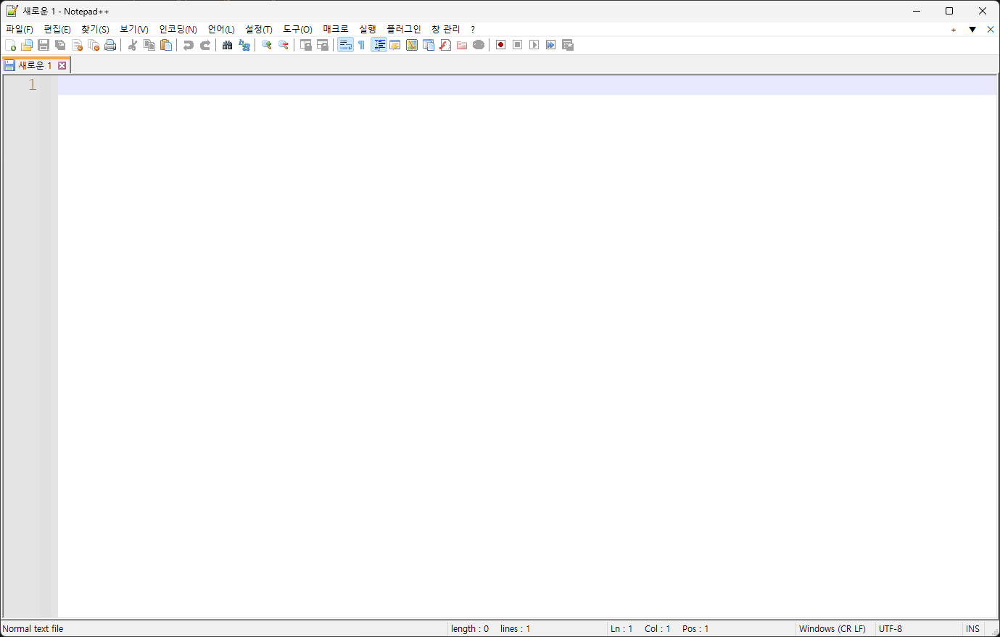

Notepad++
- Simple, but Powerful Free Text Editor
Notepad++는 다양한 기능을 가진 무료 텍스트 에디터입니다.
텍스트 에디터의 대표적인 예시로는 윈도우의 메모장과 마이크로소프트의 Visual Studio Code 등이 있습니다.
메모장은 가볍지만 텍스트를 작성하고 수정하는 것 이외의 기능이 거의 없다고 볼 수 있으며,
Visual Studio Code는 여러가지 추가적인 기능을 설치할 수 있지만 상대적으로 프로그램의 크기가 크고 작동이 느립니다.
Notepad++는 메모장과 Visual Studio Code의 중간에 있다고 볼 수 있겠네요.
메모장과 비슷한 UI, 하지만 더 다양한 기능.
Visual Studio Code보다 더 가볍고 빠른 프로그램을 찾으신다면 Notepad++를 추천합니다.
메모장과 다르게 다양한 프로그래밍 언어들은 문법하이라이팅도 해주기 때문에 무거운 IDE를 켜지 않아도 가볍게 수정이 가능하다는 것도 장점이겠네요.
대표적인 지원 언어 목록(클릭해서 펼쳐보기)
- ActionScript
- Assembly
- Batch
- C
- C++
- C#
- CMake
- CSS
- Fortran
- Haskell
- HTML
- JAVA
- JAVAScript
- JSON
- JSP
- LaTeX
- LISP
- Lua
- Makefile
- MATLAB
- MS-DOS
- Objective-C
- Pascal
- Perl
- PHP
- PowerShell
- Python
- R
- registry
- Ruby
- Rust
- Shell
- SQL
- Swift
- Visual Basic
- XML
아래 사이트에서 다운로드가 가능합니다.
Official Notepad++ Site